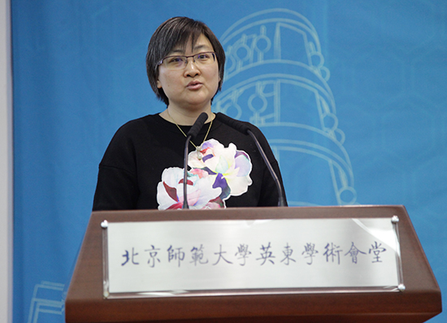

11月3日，“引领卓越，大数据助推高校综合改革——高校大数据应用研讨会”在北京师范大学英东学术会堂召开，来自国内200多所高校的信息化相关部门主要负责人、大数据技术与应用等相关领域专家共计350余人参加会议，围绕“发展教育大数据，推动高校综合治理”的主题，共同探寻高校大数据建设规范，促进高校大数据建设与应用协作交流，推动大数据在教育领域的深度应用。
会议现场

教育部科技司司长雷朝滋为大会致辞
会上，教育部科技司司长雷朝滋为会议致辞，对本次研讨会的成功召开表示热烈的祝贺，对各位辛勤耕耘在高校教育信息化一线的专家和老师们表示亲切的慰问！并在会上传达了党的十九大关于加快教育现代化、建设教育强国的精神，要求教育系统认真学习贯彻党的十九大对新时代教育工作者的新使命、新目标、新任务、新部署和新要求。教育现代化2030的发展目标要求建立信息时代现代化教育体系，必将引发教育理念和模式的深刻变革。国家将要推出教育信息化2.0，要求实现从教育专用资源向大资源开发应用、从提升应用能力向提升信息质量、从融合发展向创新发展三个转变。他要求，要扎实推进高校教育信息化工作，服务新时代国家战略需求和创新人才培养需求，积极推进高校教学、科研、管理信息化的信息化水平，做好教育信息化研究，为重点行业提供高水平教育信息化服务，牵头推进重大应用。他强调，要充分认识大数据的重要意义，以大数据的深化应用引领教育改革创新。教育大数据有助于促进教育公平，实现精准扶贫；有助于促进信息化管理，实现科学决策；有助于加速教学流程再造，提升教学质量；有助于促进规模化的个性化教育，实现因材施教。国家正在积极推动教育研究支撑政策的改革，希望各大高校能够充分利用此次北师大搭建的交流合作平台，认真研讨大数据在教育管理、教育教学研究、特别是在教育改革发展方面的重要作用。加快推进教育大数据的应用为建设教育强国和加快教育现代化做出新的更大的贡献！
北京师范大学副校长陈丽为大会致辞
北京师范大学副校长陈丽介绍了北京师范大学大数据建设与应用工作的情况，北京师范大学于2009年启动“一张表”工程，2013年建成校务数据管理平台，2016年成立学校校务数据管理中心，2017年建成校园大数据平台，围绕基于数据的科学决策、精准管理、智慧服务开展了大量卓有成效的探索。越来越多的数据，带来越来越多的可能，大数据对于完善教育治理现代化具有巨大的潜质，利用高校大数据提升高校、乃至整个高等教育治理水平是实现教育治理能力现代化的必然选择。同时，高校大数据是一项复杂的工程，需要技术、管理、政策同步改革。最后，陈丽副校长呼吁高校间建立教育大数据联盟，共同交流经验、探索规律，更快的推动高教教育大数据事业的发展。
国家自然科学基金委政策局局长郑永和作报告
国家自然科学基金委政策局郑永和局长做了题为《科学基金资助教育科学基础研究的战略思考》的主题报告，传达了国家对教育科学基础研究的基本精神和要求，教育科学基础研究是夯实教育改革的科学基础，信息化时代呼吁教育变革，科学技术是教育变革的内生动力，大数据为教育创新发展注入新动能。郑局长分别从基础规律层、技术方法层、实践变革层三个方面介绍了科教融合中的教育科学基础命题，详细解读了《国家自然科学基金“十三五”发展规划》对促进学科交叉融合的要求，系统介绍了国家自然科学基金委员会对教育科学研究支持的总体目标和战略举措。郑局长指出，希望各大高校积极参与自然科学基金项目，开展多学科交叉的基础研究，显著推动我国教育改革发展和创新人才培养，为办好中国特色、世界水平、人民满意的现代教育提供科学支撑。
人工智能专家Peter Wei博士
来自美国的人工智能专家Peter Wei博士，在会上作了题为《大数据人工智能时代的机遇、挑战及教育创新》的报告，用生动的案例分析了大数据人工智能时代的发展趋势与技术热点，并围绕大数据与教育创新提出了思考和建议。
清华大学信息化办公室主任尹霞
清华大学信息化办公室主任尹霞在会上作题为《厚德载“物” 智慧互“联”清华大学物联网与智慧校园规划》的报告，介绍了清华大学信息化发展历程，以及学校智慧校园建设的思路。
此外，北京师范大学、复旦大学、武汉大学、北京航空航天大学、中山大学、同济大学等高校相关专家及企业界技术专家分别围绕高校物联网与智慧校园规划、大数据高效查询分析与教育测评技术、高校大数据建设与应用、大数据与智慧校园建设、大数据与网络安全等方面进行了专题介绍，并与参会人员进行了互动交流。
北京师范大学信息网络中心主任刘臻围绕“高校大数据到底是什么、什么样的数据构成了高校大数据，如何建设、如何把高校的大数据汇聚起来，如何应用这些大数据”等几个方面，重点报告了高校大数据的构成与特点、如何建设高校校园大数据、如何应用高校校园大数据等内容，并对高校大数据的未来做了展望与思考。

高校大数据协作与应用趋势沙龙
会上，北京师范大学信息网络中心刘臻主任、华东师范大学信息化办公室沈富可主任、四川大学信息管理中心张磊主任、北京科技大学信息办杨德斌主任、北京邮电大学科学技术发展研究院教育信息化处安杰处长、北京交通大学信息化办公室贾卓生主任、北京建筑大学网络信息管理服务中心魏楚元主任等还进行了现场技术沙龙，针对“高校大数据协作与应用趋势”进行了广泛探讨。
 陕西省教育大数据建设专题培训会召开
陕西省教育大数据建设专题培训会召开
 【教育大数据】解读5年教育新变化
【教育大数据】解读5年教育新变化
 Round table on the subject “The use of Big Data in education”（ Turan University）
Round table on the subject “The use of Big Data in education”（ Turan University）